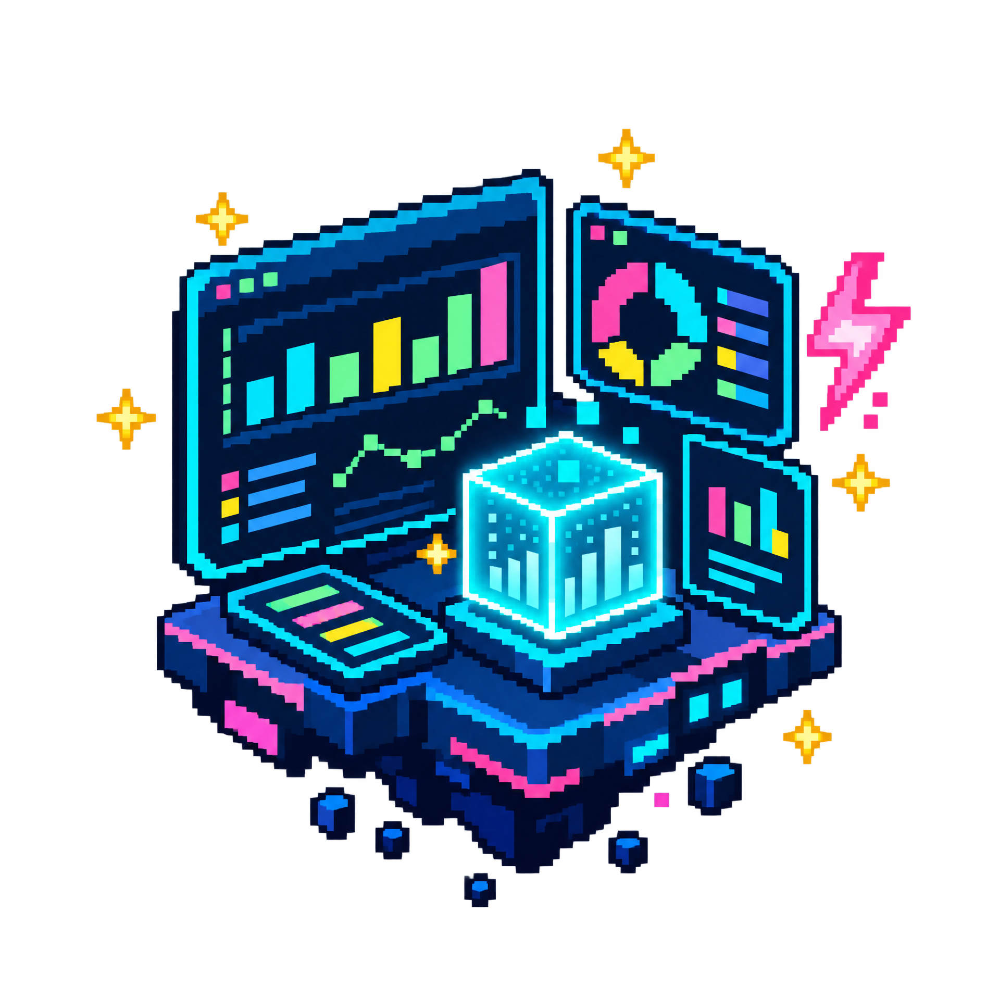
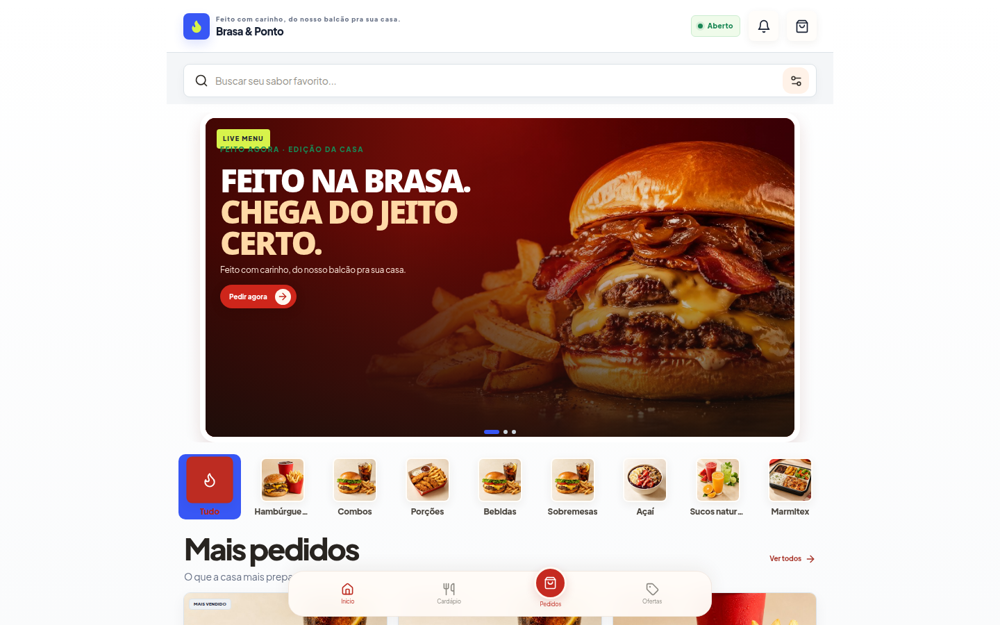
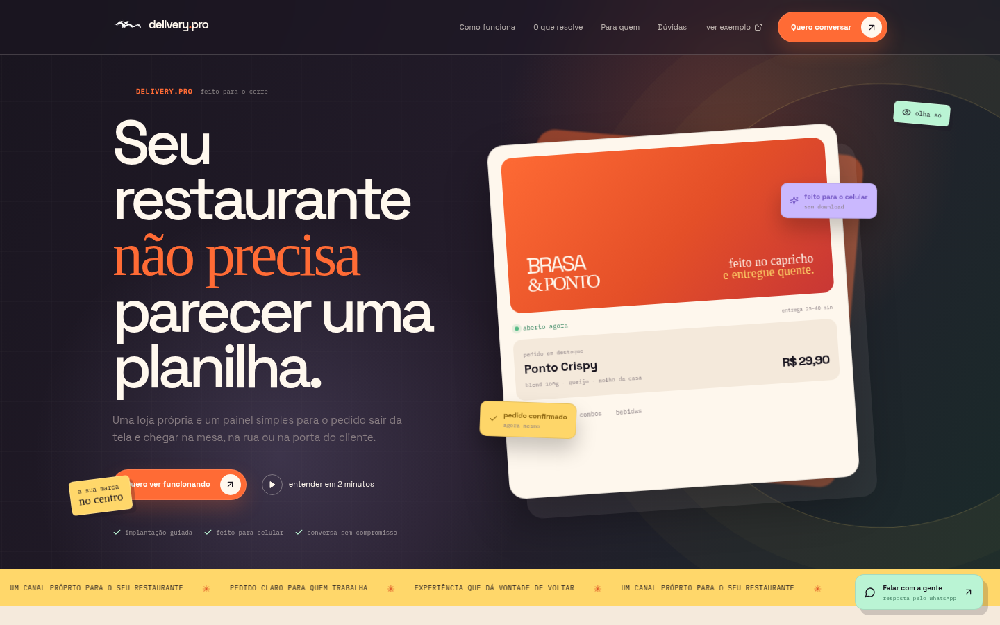
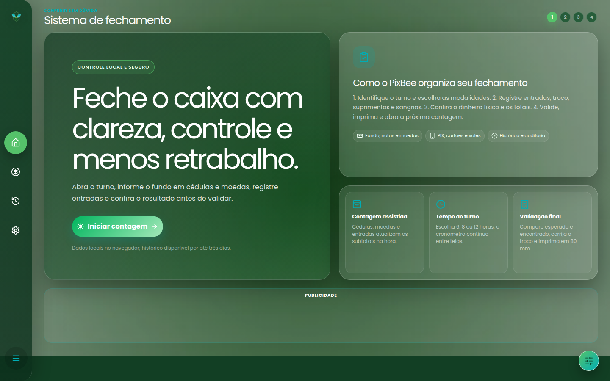
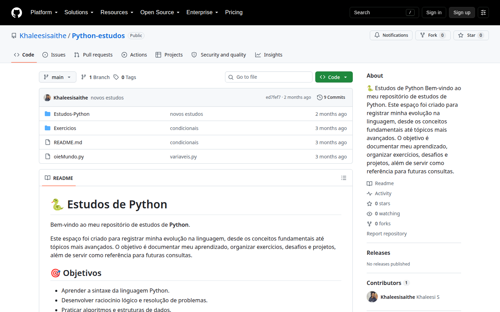

Olho para o processo
Antes de abrir o editor, procuro entender onde a tarefa começa, onde trava e quem precisa dela.
01 data / product / visual thinking
Meu trabalho começa em uma pergunta simples: onde a rotina está pedindo uma ferramenta melhor?

um pouco de contexto
Eu vim da operação, passei por atendimento e serviços financeiros e encontrei na Ciência de Dados um jeito de organizar perguntas que aparecem no dia a dia.
Antes de abrir o editor, procuro entender onde a tarefa começa, onde trava e quem precisa dela.
Planilhas, textos e registros ganham estrutura para virar uma conversa mais clara.
Uma ferramenta precisa ser explicável. Se ninguém consegue usar, ainda falta trabalho.
Minha trajetória começou no atendimento ao cliente, passou por serviços financeiros e hoje acontece na operação de loja da OXXO Brasil. Nesse caminho, desenvolvi comunicação, resolução de problemas, atenção a detalhes e visão de processo.
Foi observando rotinas, conferências e informações espalhadas que meu interesse por tecnologia, automação e análise de dados ganhou forma. Atualmente curso Ciência de Dados na Estácio e estou no 2º semestre. Também estudo Python, pandas, Power BI, Git, redes e segurança da informação.
Meus projetos nascem de problemas que conheço de perto. O PDFToolkit organiza relatórios de vendas; o ContaCaixa conecta programação à rotina de fechamento. Em cada projeto, tento fazer o dado deixar de ser ruído e virar próximo passo.
* indicador pessoal de rotina, não é certificação nem promessa de resultado.
como eu transformo problema em entrega
Minha forma de aprender é prática: observo a operação, organizo a informação e crio uma solução que possa ser testada, explicada e melhorada.
Transformar planilhas e relatórios em uma leitura mais clara do que está acontecendo.
Python · pandas · Power BIReduzir etapas manuais e criar fluxos que devolvam tempo para a operação.
scripts · Streamlit · GitDesenhar interfaces que explicam o processo e ajudam alguém a concluir uma tarefa.
HTML · CSS · JavaScriptEstudar redes e segurança para entender o caminho do dado antes de confiar no resultado.
OSI · TCP/IP · ISO/IEC 27002histórico profissional
Clique em uma experiência para abrir as responsabilidades completas e a conexão com meus projetos.
OXXO Brasil · operação de caixa, atendimento, estoque, inventário, Food, checklists e processos de loja.
Mazinni Administrações e Empreitadas LTDA · prospecção, serviços financeiros, análise de propostas e atendimento.
Atento Brasil S/A · conta EDP · tratamento de reclamações, dados em sistema, metas e apoio à melhoria de fluxo.
projetos que já rodam · telas reais / links reais
Ferramentas construídas a partir de problemas reais. Nenhum projeto aqui nasceu de exercício de sala: cada um começa com uma pergunta da operação e termina em um próximo commit. O link vem primeiro, e as ferramentas ficam logo abaixo.

LIVE APP
LIVE LP
LIVE APP
REPOFerramenta em Python com interface web para gerar relatórios de vendas manualmente ou importar e cruzar dados de CSV, Excel ou PDF.
O primeiro projeto que marca minha jornada em desenvolvimento web, transformando curiosidade em prática, linha por linha.
Projeto que integra HTML, CSS e JavaScript — um registro de prática de lógica e construção de interfaces.
o que está na mesa
ferramentas que uso, estudo ou mantenho por perto quando uma ideia pede forma.
01 observe(context)
02 organize(signal)
03 build(useful_thing)
04 repeat(with_care)ferramentas que eu uso e estudo
Cada ícone abre a documentação oficial ou o espaço do projeto correspondente. Arraste, use as setas ou passe o mouse para explorar.
acompanhamento acadêmico
Graduação em Ciência de Dados · período 2026.2 · em andamento.
prestação de serviço · Saithe
Ofereço soluções digitais com foco em organização, clareza e operação: do dado espalhado à ferramenta que alguém consegue usar.
Organização, leitura e interpretação de dados para transformar informação em decisão.
Python · pandas · Power BIFerramentas para reduzir tarefas manuais, retrabalho e processos difíceis de acompanhar.
Python · Streamlit · scriptsVisualizações e relatórios que ajudam equipes a enxergar o que está acontecendo.
Power BI · Excel · PDFInterfaces e pequenos sistemas web pensados para explicar processos e facilitar o uso.
React · TypeScript · Vitedisponibilidade profissional
Busco oportunidades como analista de dados, estagiária ou trainee em Ciência de Dados, Data Analytics, automação e produto digital.
Quero fazer parte de um time, aprender com problemas reais e contribuir com organização, análise e construção de ferramentas úteis.
enviar oportunidade ↗sem linha reta
O começo antes do código.
Aprendi a ouvir, registrar e resolver com contexto.
Segundo semestre, muitas perguntas e prática todos os dias.
Projetos abertos, pequenos testes e vontade de construir melhor.
06 / contato
Eu gosto de conversar sobre dados, produto e os detalhes que fazem uma ferramenta funcionar.